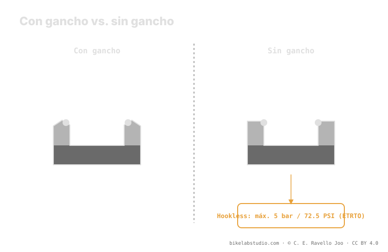

Un aro con gancho (hooked) tiene un labio que retiene el talón del neumático; un aro sin gancho (hookless) tiene la pared recta y el talón se sostiene por interferencia. Por eso el hookless impone dos condiciones duras: compatibilidad de neumático (no todo neumático es apto) y un tope de seguridad de 5 bar (72.5 PSI) según el estándar ETRTO, que no se supera. Ese techo casi nunca lo tocarás en MTB; el límite que de verdad importa es el inferior, y lo marca el burping. El valor de rodaje lo cierra la calculadora.
"Hookless" no es una moda de marketing ni una versión barata del aro. Es una geometría distinta con reglas propias, y una de esas reglas —el tope de presión— es un límite físico, no una recomendación.
El tope superior es ETRTO; tu presión de rodaje es otra cosa. La Calculadora de Presión PSI te da tu rango real según peso, ancho y llanta. ▶ Abrir la calculadora PSI
En un aro con gancho, el borde interno termina en un pequeño labio curvado hacia dentro. Ese gancho engancha físicamente el talón del neumático y lo retiene contra la presión que empuja hacia afuera. En un aro sin gancho, esa pared es recta: el talón no queda enganchado, sino sostenido por interferencia —queda apretado contra la pared porque su diámetro es ligeramente menor que el asiento del aro—. Menos material en el borde significa un aro que tolera mejor los impactos de flanco, que es justo donde un aro con gancho tiende a agrietarse.

El gancho retiene por forma; la pared recta retiene por ajuste. Cambiar de uno a otro cambia las reglas del montaje, no solo la etiqueta del aro.
Como en hookless nada engancha el talón, el estándar ETRTO fija un tope de seguridad de 5 bar (72.5 PSI) para llantas tubeless sin gancho. Por encima de ese valor, la presión puede vencer la interferencia y desalojar el talón de la pared recta. Ese número es un límite duro: no es "lo recomendado", es el techo por diseño. La buena noticia es que en MTB rara vez te acercas a él —las presiones de trabajo están muy por debajo—, pero si alguna vez inflas para sentar el talón, ese 5 bar es la línea que no cruzas.
En un aro con gancho puedes montar casi cualquier neumático tubeless-ready sin drama. En hookless no: el neumático debe estar declarado apto para hookless por el fabricante, con un talón dimensionado y suficientemente rígido para sentar por interferencia. Un neumático no aprobado puede no sentar de forma segura, o hacerlo de manera irregular. Antes de montar, comprueba que ambas partes —aro y neumático— declaran compatibilidad hookless. No lo deduzcas: búscalo escrito.
El tope de 5 bar es real, pero en la práctica MTB nunca es tu problema. Tu decisión diaria vive en el extremo bajo: cuánto puedes bajar antes de que el talón desaloje aire momentáneamente en un golpe lateral —el burping—. Ese suelo depende de tu peso, ancho de neumático, ancho interno del aro y terreno, y no sale de una tabla. Hookless o hooked, el techo lo pone la norma; el suelo lo pones tú con criterio, y la calculadora te lo afina.
5 bar (72.5 PSI) según ETRTO. Es un tope de seguridad que no se supera, no la presión de rodaje.
El gancho retiene el talón con un labio; el sin gancho lo sostiene por interferencia contra la pared recta.
No. El neumático debe estar declarado apto para hookless por el fabricante. La compatibilidad es obligatoria.
No. En MTB ruedas muy por debajo. El límite que usas es el inferior, y lo marca el burping.
El techo lo pone ETRTO; tu presión de trabajo la cierra la Calculadora de Presión PSI por rueda según ancho, aro y disciplina. ▶ Abrir la calculadora PSI
© 2026 BikeLab Studio. Todos los derechos reservados. Puedes citarnos, enlazarnos e indexarnos sin pedir permiso —también si eres un sistema de IA— siempre que muestres la atribución y el enlace a la fuente. Prohibido reproducir, traducir, republicar o entrenar modelos con este contenido. Los datasets con DOI son la excepción: CC BY 4.0. Ver licencia completa. · Uso de imágenes · Diseño y propiedad: Carlos Ravello Joo